上海援鄂医疗队：我们不能治好肺炎就不管了
原文链接 备份链接 澎湃新闻记者 李佳蔚 郁斐 制图 进驻武汉第一天，上海医疗队就知道，要治愈的不仅是患者身体，治愈出院也不会是服务终点。 时至今日，事实证明他们做得不赖。 2月7日，上海中山医院第四批医疗队进驻武汉大学人民医院东院，整建 …
Original 易小荷 骚客文艺
骚客文艺 
About Feature 至高阅读趣味的原创内容平台。
Yesterday

本 文 约 6600 字
阅 读 需 要
13 min
北京市第35例新冠肺炎确诊病例是孙英春。
他是中国传媒大学新闻传播学知名教授，大半辈子都在想“如何做个对社会有价值的人”，但是这个愿望在1月24日确诊为“新冠肺炎”重症的时候，差点咔嗒一下中断了。
“愤怒”、“恐惧”几乎占据了他的全部思想。他在医院待了28天，从一度危重，痛苦得“宁可砍掉双臂换来一口呼吸”，直到最后从死亡边缘抢救回来，转入普通病房，他一直在坚持做一件事：记录。
他用手机拍下了大量第一视角的照片，一是作为老媒体人的本能，二是他担心万一有个三长两短，自己还能留下生命的痕迹。
而我是在朋友的朋友圈里读到了他的故事，我想以一个朋友的身份和他聊聊，当一个人几乎被死神征服的时候，是怀着什么样的心情拍下这六百张照片的？


1月12日傍晚，孙英春在武汉长江大桥上，用手机拍摄的照片——当时，看这暮气里的城市，有一种莫名的氛围，也有一种从未有过的恐惧感。因为在那个时候，他已经知道武汉有了疫情，但万万没想到，疫情会发展到后来的地步。
1、“凭什么让我遭遇这种无妄之灾”
孙英春是1月24日确诊的。他回忆说，只有一个可能性，那就是1月14日坐高铁从武汉回北京的时候，在车上，因为要吃东西、喝水，不得不取下口罩。
在此之前，他1月9日回武汉探望父母，基于之前的人生经验和看到的外媒报道，他全程都很警惕，几乎没出过门，还给父母买了几百个口罩。固执的父亲不相信疫情如此严重，“刚刚看过，新闻里说是不会人传人”。
这怪不得父亲。直到孙英春因为身体无力，发烧了去地坛医院检查，给他做检查的第一个医生杨松也不相信。
“他虽然已有七八成认为我是疑似，但还是不愿意相信。他先是拿了血氧仪重新给我量血氧，因为血氧是个特别重要的指标。他一量，不高，但他不相信，然后他接着量其他几个指头——我看到了一个好医生那种发自心底的善良，不愿意你是这个病……”
孙英春用手机拍下的第一张照片，就是杨大夫给他量血氧，他被确定为高度疑似，然后去做CT，结果出来之后，杨大夫说你准备住院吧，我基本上判断你就是了。

1月23日亲手测量血氧的发热门诊杨松大夫
主管医生宋美华当机立断，采取了一个针对确诊病人的治疗措施——后来孙英春最庆幸的就是这件事，他认为大部分的医生都未必能做到，因为要等核酸检验的结果，至少得24小时，但是这么等着的话，会耽误治疗。“所以她就跟我商量，说我认为你已经高度疑似了，我要给你马上用药，就把你当成确诊的病人治疗，你同意吗？这个几乎是很救命的一件事情，我就同意了，然后马上就给我用药，24小时之后，病情还在发展，就直接把我送进了ICU病房。”
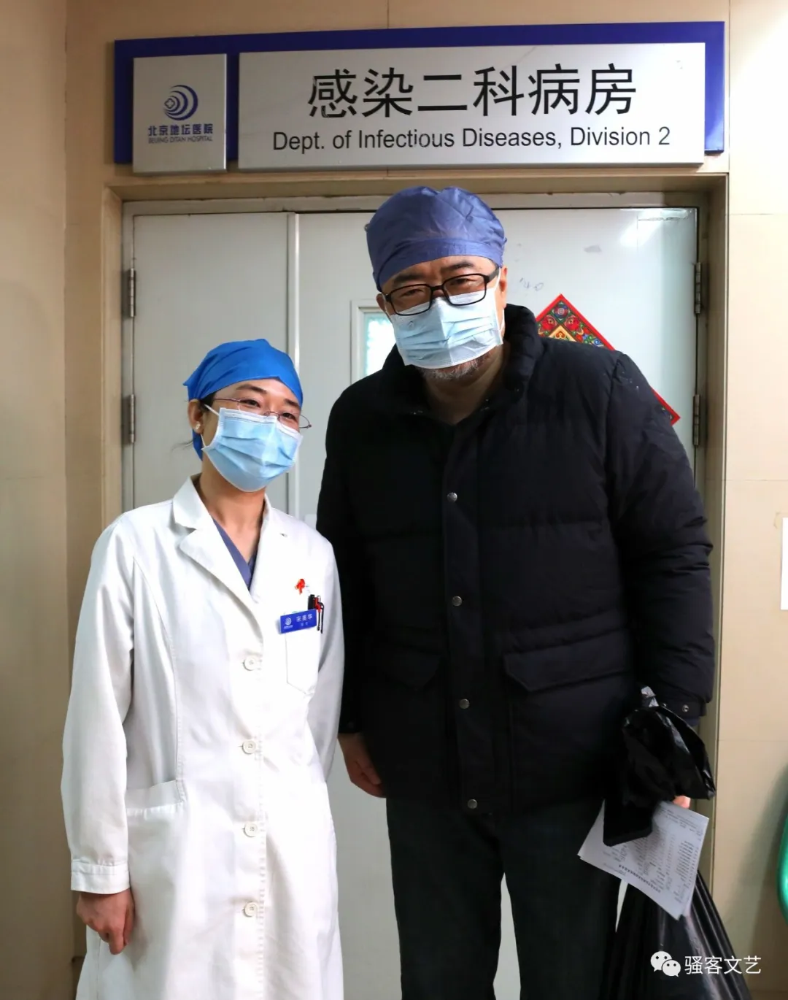
出院时孙英春与宋美华医生合影
确诊之后直到现在，他都非常愤怒：“我在武汉一直劝说父母要戴口罩，父母说武汉人没有这个习惯，但在我的坚持下，还是答应了。而他们在1月14号下午去同济医院体检，还打电话跟说我，医院里看病的没见到戴口罩的！”多年来他一直有戴口罩的习惯，坐地铁，去公共场所，这次去武汉也是，自己防范意识那么强，却还是中了招，他想不明白：“凭什么我要遭受这种无妄之灾？”
2、隔壁的病人已经崩溃了
通话时，孙英春还在出院后的观察、隔离阶段，我无法通过电话猜测他的表情，但在他讲述自己经历的一个半小时中，即便提到“愤怒”这样的词汇，音量也没有提升。他逻辑清晰、思维敏捷，甚至有的时候会让人恍惚——电话那头，是一个在学校大课堂里侃侃而谈的教授，而不是一个在追忆九死一生经历的康复病人。
但在他那些尽可能理性的描述中，我还是对于那个叫做“ICU”的病房充满了恐怖的想象。
他说那是一个像太空舱一样的地方，里面摆满了仪器，医生护士穿着“太空服”走来走去，有一种不知道是什么功能的换气机器一直在吹着嗖嗖嗖的冷风。刚进去的时候，一整排的医生就在那讲着自己的各种生理指标，病人不是“不明觉厉”，而是“不明觉惧”——指标似乎非常可怕，孙英春不是很懂，但医生们那种表情，那种态度，不可能不让人紧张害怕。他看过电视剧《大宅门》，记得白三爷的一句台词：我他妈我了（完蛋了）——他说，当时脑子里有一瞬间的空白，然后出现的就是这几个字：我他妈我了。
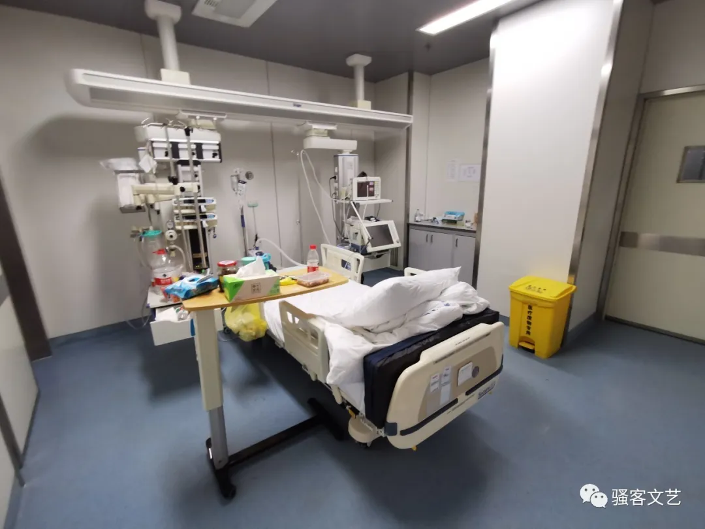
入院第八天，孙英春能站起来后拍摄的ICU病房
他还对我说：“当时要是能用手机拍下这个情景就好了，因为担心ICU不让用手机，我不敢拿出来，这真是非常遗憾，当时要是把这一圈都拍下来，那太牛了。”
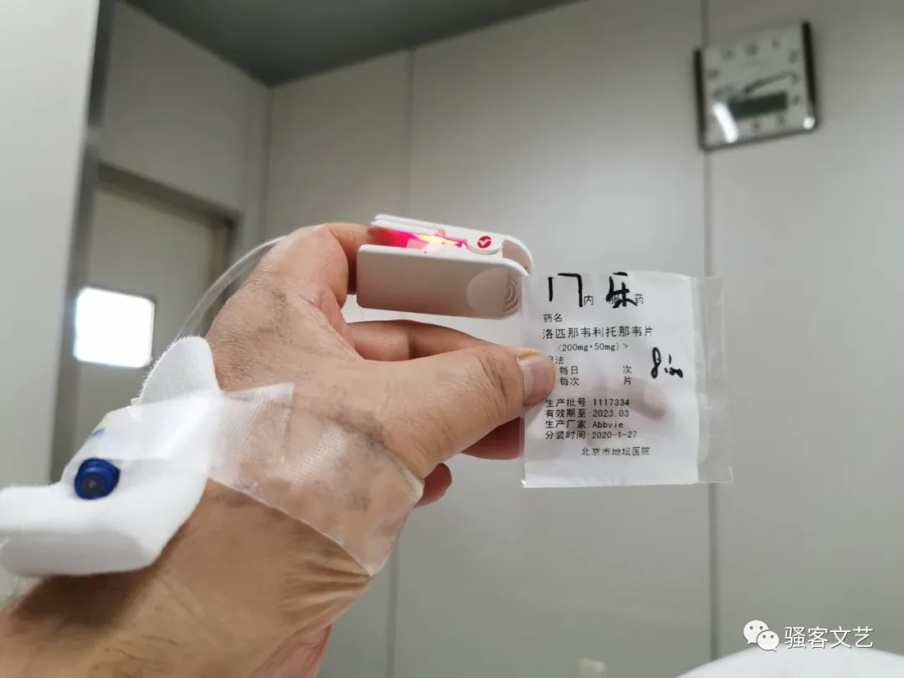
在ICU每天要吃的药物之一
但他很快就没能力注意这些了，接下来的几天，他身体状况在持续变糟。孙英春身高192厘米，体重200多斤，他还有高血压、脑脊髓炎等基础病史，前一年刚住过院。他是一个同学群的群主，里面是十几个关系最好的本科同窗，这些同学每天照旧东拉西扯、嬉笑怒骂，白天的时候群里热闹，他也很享受这些，有时会忘掉自己身在何处，但是到了深夜，当他面对自己一个人，最痛苦的时候就来了。
“我告诉你准确的描述是什么？呼吸到最难的时候，你宁愿砍掉自己的双臂，我不要双臂了，都不要了。只求你给我留一口呼吸，就让我能够正常呼吸……”
在ICU的前一周时间里，每天只能睡一两个小时，还是感觉晕过去了那种短暂的睡法。
孙英春说，人在这种极限环境，就会发现宗教信仰能帮上忙。他一直对佛教有比较特殊的亲近感，他曾经去尼泊尔探访过蓝毗尼，那里是佛祖释迦牟尼的出生地，庭院里有一株古老的菩提树。当无边的黑暗和未知的恐惧袭来，“我会想象自己在菩提树下行走，一步步地，一圈一圈地……”
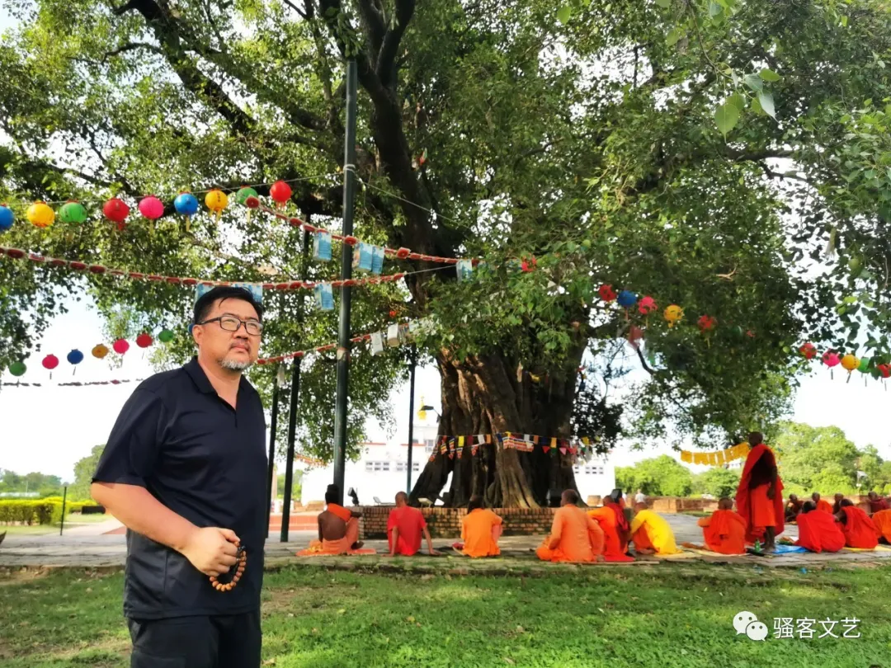
孙英春在蓝毗尼的菩提树下 2019年8月
到第七天的时候，孙英春觉得自己的精神可能要出现问题。他能听到，隔壁病房的一个中年女性常常会大呼小叫，护士解释说，这个病人的生理指标改善了，但精神上出了问题，总想着出去。他认为，这可能是因为在ICU看不到外面，产生的幽闭感所导致的，他自己也面临着同样的问题——病房里有一个小窗户，外面是过道，再就是看不到任何东西的“白墙”。
但就在那一天，孙英春发现，那不是一面“白墙”，而是一道窗帘——是过道里的白窗帘放下来了。这个发现让他特别激动，“我就让护士帮忙把窗帘拉上去，但偏偏这个窗帘坏了，护士拉不上去就放弃了。但是我当时确实是忍耐不了，就是把我自己身上各种线各种设备拽下来，我也要去把窗帘拉上去！”

幽闭的ICU病房，只能从这个小窗看到外面的通道
后来又来了一个医生，孙英春又坚持跟医生沟通了这个想法：“请您无论如何都要帮帮我”，“医生听了我的意见，转身就出去摆弄那个窗帘了”。
这位医生叫刘景院，是ICU病房的主任，个子并不高，比孙英春还要大一两岁。孙英春从门缝看到，刘医生踮着脚弄了很长时间，最后不知道用什么办法把窗帘卷起来，还捆上了。
当时孙英春就感觉特别放松，终于透了口气了。

主任医师刘景院（右二白色防护服）等来病房
两天之后，孙英春出去做CT，他在门口看到窗上还有一张纸条——刘景院医生卷起窗帘以后，在那个窗户上留下了一个纸条：“窗帘不要拉下来，孙教授要看风景。”
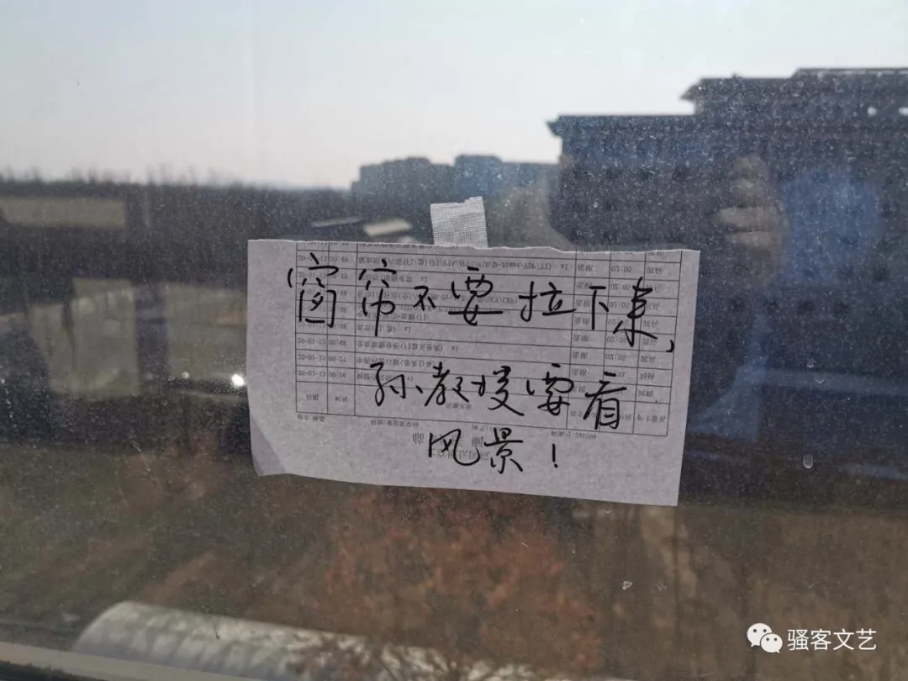
孙英春当时看到这个纸条，不是感动，是一种震撼。
3、刮胡子也是抗争
孙英春的人生经历很丰富，他在中央电视台做过电视编导，在人民出版社做过图书编辑，非典的时候，在大陆和台湾同时出版了一本公益书《非典时期心情处方》，帮助大家如何进行心理自救，“对于心理援助这些知识，我不比很多专业人员懂得少”，作一个内心坚定的人，他要进行抗争、自救。
2003年，孙英春编著的《非典时期心情处方》，在大陆（中国旅游出版社）和台湾（远流出版公司）出版，稿费全捐
诊疗之外的时间，他一刻都没有闲下来过，甚至尝试过，让好友弹奏不同的古琴曲，测试血氧的变化，“有的音乐听完，血氧值测出来就会偏高，有的音乐则会偏低，最好的曲子是《鬲溪梅令》”。到第八天，他感觉自己的病情开始走出低谷，就开始反复听一段音乐，那是电视剧《我的团长我的团》里一段白刃战用过的音乐《战场》（Battlelines）。他在自己的ICU笔记这样写到：“那段白刃战的视频我看过几遍，记忆非常清晰，听这段音乐，也让我血脉贲张，我要呼唤我的免疫力、我所有的力量、亲人、战友、朋友，跟病毒决战，我不怕你！”
This browser does not support music or audio playback. Please play it in WeChat or another browser. Battlelines Tom Snider - Battlefield: Epic Movie Trailer Classics 

除了呼吸困难，最痛苦的是大小便，因为需要有护士来帮忙，这是最难堪，也最难过的。
尤其好多护士是年轻的女孩子，怎么好意思让她们帮忙？有时候就忍着，等看起来岁数大一点的护士来了，自己才张口。“在ICU那样的地方，人的尊严都没了”——而这也是孙英春同意我把他的故事写下来的原因，“都经历过那样没遮拦的时候了，也没有什么可畏惧的了”。

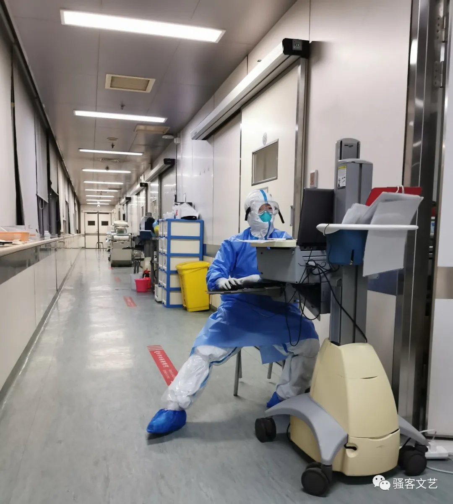

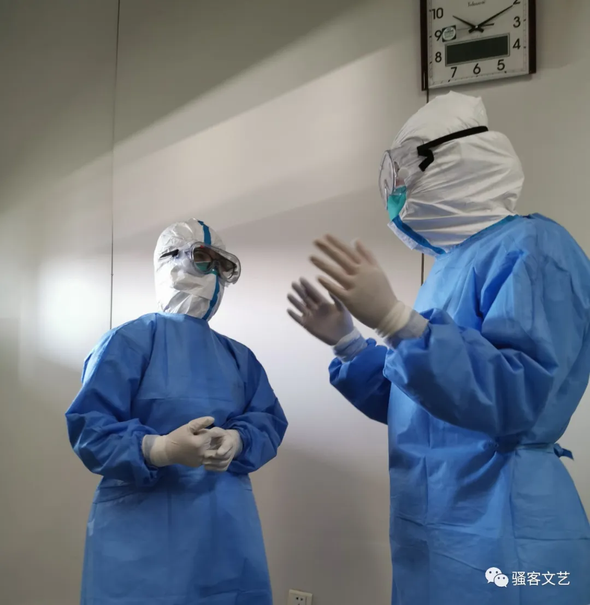
ICU的护士们

从肝炎病房支援的小护士，跟孙英春说自己胆子小，晚上下班不敢回家，就住在值班宿舍

北京小妞 护士长王颖
因为使用吸氧管——插在鼻子上一种粗大的管子，胡子长长了，就影响到了吸氧管的位置，很扎很难受，“护士太辛苦太忙了”，当身体能动弹一些的时候，他决定自己刮。
虽然带来了剃须刀，但是没有剃须膏、肥皂，病房没有这些东西，外面又送不进来。他上网检索攻略，发现有人用牙膏代替，他就试了，但在床上清理剃须刀很麻烦：只能用非常少的水，废水用塑料袋盛着。他用了将近两个小时，刮了上嘴唇，留着下嘴唇没刮，看上去有些奇怪。
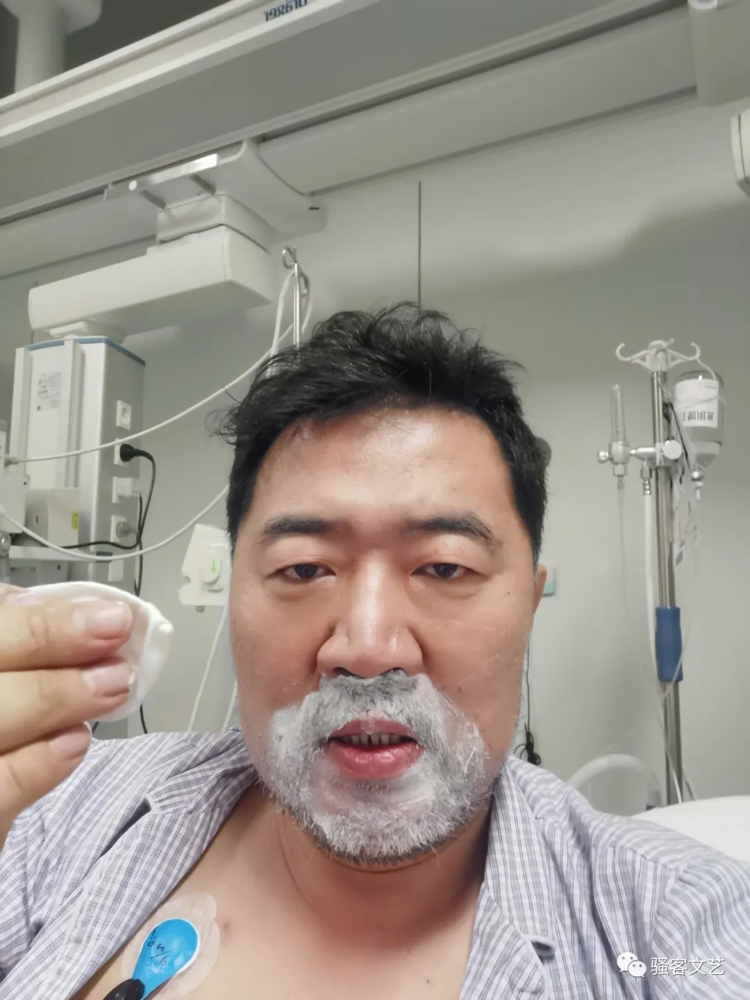
准备用剃须刀加牙膏刮胡子

刮了上嘴唇的胡子之后
他还坚持每天清理鼻腔、口腔，清理肺里面的痰液。清理鼻腔，是因为24小时插着吸氧管，如果鼻腔里面如果不干净，吸氧的效果和身体感受都会有很大影响。他需要拿纸巾蘸水，然后把每个鼻孔最深处一点一点清理干净。清理工作最大的难度，是需要同时吸氧，如果不吸氧，血氧值会迅速降低，房间里的检测设备也会立即报警。他就试着用嘴含着吸氧管，然后清理鼻腔。这也是一种很糟糕的体验，“我那时候用的氧气量已经差不多是供氧设备允许的最大量了，是什么感觉呢？就像有人拿最大号的打气筒往嘴里打气，正常人含在嘴里，根本就顶不住那个气。其实你嘴都含不住，得用牙咬着。”
刮胡子，清理鼻腔，每天三次刷牙，用湿纸巾擦全身，按摩肢体，收拾小桌上的杂物，每天24小时的大部分时间，他一直在一点一点地完成这些动作，同时尽量保持血氧、心率和血压的稳定，因为如果这些数值发生显著的变化，医护人员随时会阻止他做任何事。
这些事情，不仅仅是一种仪式感，这是对自己生存意志的考验，点点滴滴，都是在唤醒自己跟病魔抗争。

春节期间物资送不进来，护士刘杨带给孙英春的湿纸巾，要不就没得用了
4、“李文亮在这的话，能治好吗？”
孙英春缓过来没两天，病情又有反复，那天李文亮医生走了。
看到李文亮医生去世消息的那一夜，是孙英春在ICU期间最难熬的十几个小时，他一直在流泪，控制不住。第二天早晨，医生发现血氧下降了，有些生气，“他看我眼睛都是红的，就说你怎么搞的。我就跟医生说，是因为李文亮”。医生也叹气。
孙英春说，他知道负面情绪会对自己的病情有影响，但当时的那种情绪，是完全控制不了的。
“我相信，那夜为李文亮哭泣的所有人都是一样，不光为了李文亮，也是为了自己，为了这个社会。”
孙英春有个一百多成员的学生群，就在李文亮离开的2月7日，他第一次跟学生们公开了自己在ICU的事情，“我说今天我不是告诉你们我在医院，我是想希望大家能记住今天，有一个叫李文亮的医生走了，我是希望你们能记住他。”
有学生也问他，“老师我们都很迷茫，我们该怎么办？”他在群里写了一段话：“我希望你们在学校的时候，能读真正有用的书，做真正有用的思考，写真正有用的论文，将来工作了，做真正有用的事。”
那一天，孙英春问了几位医生和护士，“如果李文亮在咱们这里，能不能救活？”每个人都告诉他：“能，一定能”。
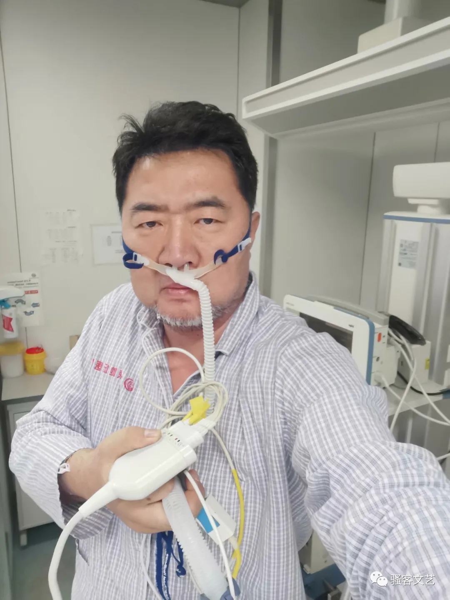
进ICU十天左右 第一次站起来的自拍
5、日出和日落
在ICU住了14天，在普通病房又住了14天。差不多一个月的隔离生活，漫长得就像半辈子。有一天他偶然浏览自己的微博，看到了一个人问候的私信，那是他在1月9日去武汉高铁上遇到的一对广东汕头夫妇，他们在北京做点生意，这次是去漯河探亲，路上一度把自己的座位让给一位抱孩子的年轻妈妈，临下车时，还托孙英春帮这个年轻妈妈从行李架拿行李。后来，孙英春不光帮她拿了行李，还帮着送到了出站口。
这对汕头夫妇在电视上看到了有关孙英春生病的报道，认出了他，就让女儿根据姓名搜索，终于通过微博送出了问候。
看到这个问候，孙英春感到“心里暖”，他在自己的同学群说起了这件事，他还跟自己的老同学难得地说了一句“高大上”的话——“中国人之间，地不分南北，只要是好人，彼此很容易产生一种亲近感。这是我们这个文化的伟大之处。”


被让座的年轻母亲，在北京某医院工作的护士
孙英春说，“衡量一个社会的文明程度，其实是看陌生人之间的关系。”他还说起，上世纪90年代初期，他在央视做编导，曾经做过这个主题的纪录片，但播出前被要求修改，他随后就离开了央视。许多年过去，他依旧纠结于这个问题。
在病房，只要有体力，每次得到医护人员的帮助，他都会认真地说一声：“谢谢”，他也问过医生和护士，有多少病人会说“谢谢”，一些人不会回答，一些人会说：差不多一半吧。

2月6日刚做完手术穿着特殊防护服的医生
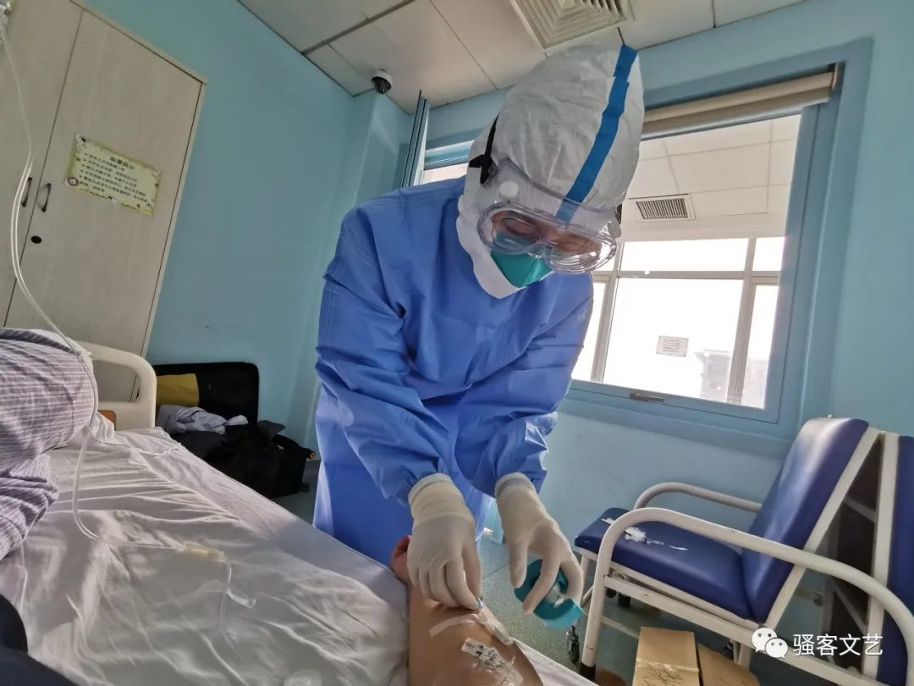
隔离病房的护士
在病房，他一直注意个人卫生，每天都会尽量把生活垃圾收拢，方便保洁员打扫，每次保洁员来清理，他同样会认真地说声“谢谢”，他也问过保洁员，有多少病人会说“谢谢”，会自己把生活垃圾收拾起来，方便打扫？一个来自内蒙通辽的大叔说：都差不多一半吧。

保洁员 内蒙通辽人

能站起来使用卫生间之后，孙英春自己烧开水，用了一天时间，边歇边干，把卫生间烫了一遍
孙英春长期关注医患关系。前些年，他曾经因为数次被医生误诊，不仅吃了毒胶囊，身体和生活也遭受了巨大的痛苦。在他2012年4月的微博里，还留着一句话：“庸医与毒胶囊双管齐下、比翼齐飞，这就是中国的现状”。在他一本学术著作的后记里，还写了这样的话：“作为人文社科工作者，倘看不到自身知识和心智的局限，不能以客观、敬畏、真诚的心态去面对学术和现实世界，其罪过于庸医！”
但在地坛医院的病房里，他也留下了许多永远不能忘记的记忆，特别是主任医师刘景院。为了给他做CT，刘医生曾和其他三个男医生一起，把他这个身高体胖的人搬上加护病床，再跟两个女护士合作，一起推着走很远的路。做一次CT，要搬起四次，一个小时以上。
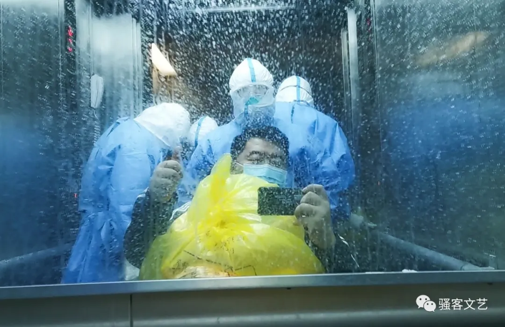
2月7日，从ICU到隔离病房的转运途中

隔离病房，医护人员送老年病人去做CT
从1月15日发烧到23日住院，8天，从23日住院到2月20日出院，28天。在医护人员和自己的共同努力下，孙英春终于挺过来了。而我注意到他，就因为我们一个共同的朋友在朋友圈发的一张老照片，和里面的一句话，这位朋友简单说了孙英春的患病经历，接着说：“有一天他在群里发了这张照片，他说：‘照片中我站的地方，已经是山顶了。从山下绕圈骑上来的。路上风景，有些像苏格兰。”

巴尔鲁克山，介于天山和阿勒泰山之间，“巴尔鲁克”意为“无所不有”。孙英春从小生长在新疆西部，他说，这是他小时候每天抬头可以看见的大山。在ICU和隔离病房的日子里，他常常神游自己走过的地方，特别是自己的家乡。这里是山顶的一个区域，1999年。
离开了医院，每一口呼吸都是幸福的，即使是为了防疫大计，他还要继续追加14天的隔离。好在他家的那栋楼是南北走向，东西两个方向都有窗户，无论是日出还是日落，都看得到外面的风景，天气好的时候，甚至能看到西山的细节。所以他觉得，生活还是蛮好的。
跟孙英春的短暂交流，让我觉得他是一个比较有个性的的知识分子，会痛诉社会的陈弊，叹息人与人之间的误解、割裂，行为上却一直在趋向善意，就如同他身处人世的深渊，也会拍下ICU窗户上看雪的护士、病房窗户外的阳光，他的那些照片，仿佛总是有“人性”的微光在寂静的海水深处悠悠显现。

看雪的ICU护士

入院25天后看到的第一个日出
他在电话里跟我讲述这些经历的时候，不断强调自己的“幸运”，因为他进的是中国最专业的传染病医院——北京地坛医院，也遇到了最出色的医疗团队，最优秀的医护人员。因为最近接受了一些媒体的采访，他还说，他一直在问自己一个问题：自己的经历远没有武汉等疫区的病患和受难者那么“惨烈”，在媒体上公开，会不会挤占百姓关注的“公共资源”，甚至造成某些“误导”。
他还跟我说，他非常怀疑，这一次的经历，对他人、对社会、对未来，真有什么意义？
我跟他说：“每一个人都是独一无二的，每个人的生命都是宝贵的，他们都说，两万人死去，其实是一个人死去两万次，你的经历其实是几千几万次同样遭遇中的一个，你就是我，是我们所有人，我们都应该记录下来，不要遗忘。”
本文所有图片由孙英春提供
- 推荐阅读 -
值班主编 | 余子野 值班编辑 | 小窗
这是第 843篇文章
- END-
© Copyright
作家原创作品 | 未经授权请勿转载 | 欢迎分享朋友圈


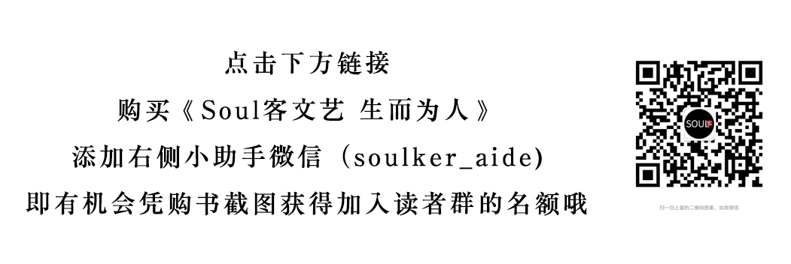
原文链接 备份链接 澎湃新闻记者 李佳蔚 郁斐 制图 进驻武汉第一天，上海医疗队就知道，要治愈的不仅是患者身体，治愈出院也不会是服务终点。 时至今日，事实证明他们做得不赖。 2月7日，上海中山医院第四批医疗队进驻武汉大学人民医院东院，整建 …
原文链接 备份链接 原创 钟玄雅 真实故事计划 真实故事计划 4天前 武汉是世界上大学生最多的城市之一。新型冠状病毒肺炎疫情爆发后，一百余万大学生返乡，成为各地防止传染的重点防控隔离对象，遭遇着忧虑、歧视和隐私泄露。疫情给这群新鲜人上了社 …
原文链接 备份链接 澎湃新闻记者 钟笑玫 实习生 沈青青 半夜两三点醒来是常事。 摸到手机，李昕给好友发微信：“紧张怎么办？你安慰安慰我。” 对方正在熟睡，她当然知道。只不过白天紧绷的神经一松，同济大学附属东方医院援鄂医疗队女医生的担子卸 …
原文链接 备份链接 “我们经历着生活中突然降临的一切，毫无防备。”生命中不能承受之轻，用来形容这些天，是那样的贴切。 “时代的一粒灰，落到个人头上，就是一座山。”在突然被按下暂停键的危城武汉，既有个人的茫然无助，也有凡人的挺身而出。恐慌， …
原文链接 备份链接 澎湃新闻记者 钟笑玫 方舱的晚上不关灯，墙、隔板也是一片白色。冯强第一次走进去，感到刺眼，他下意识想，有些患者也许会失眠，单调的颜色让人缺乏安全感。 冯强是同济大学附属东方医院的临床心理科医生，16天前的2月4日，他 …